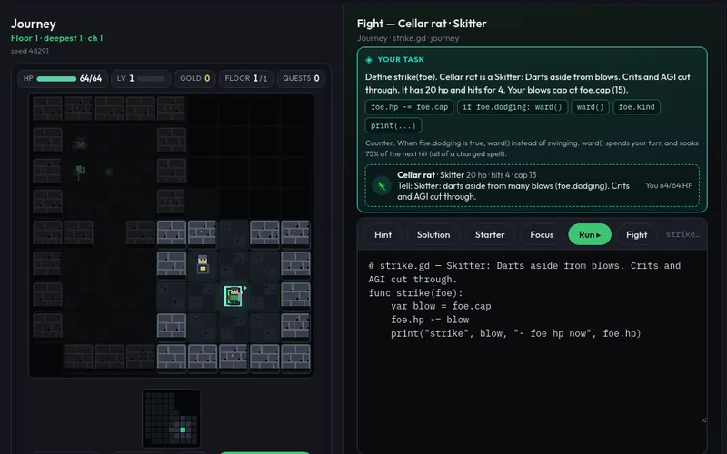
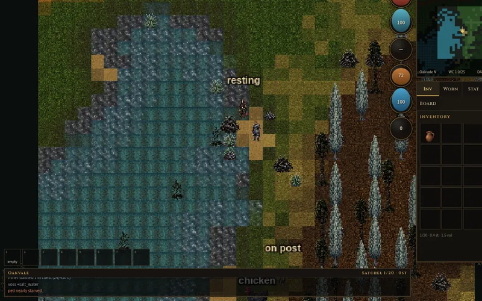
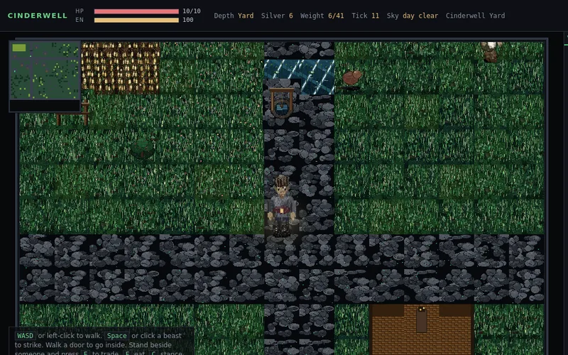
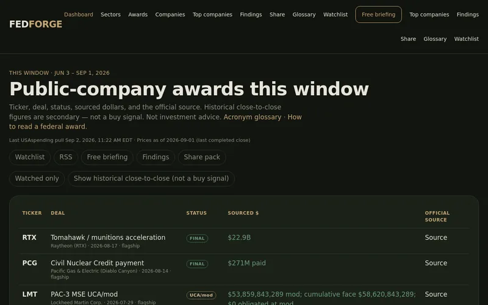
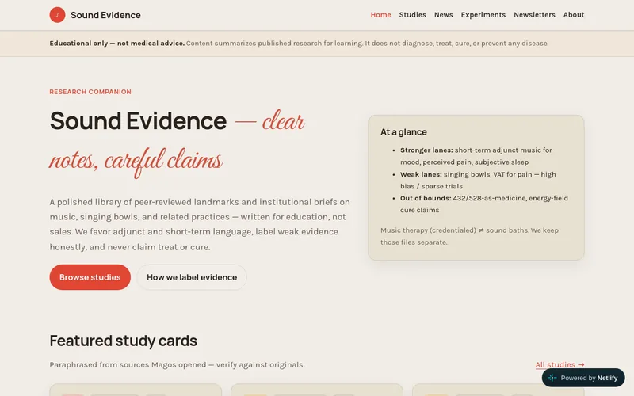
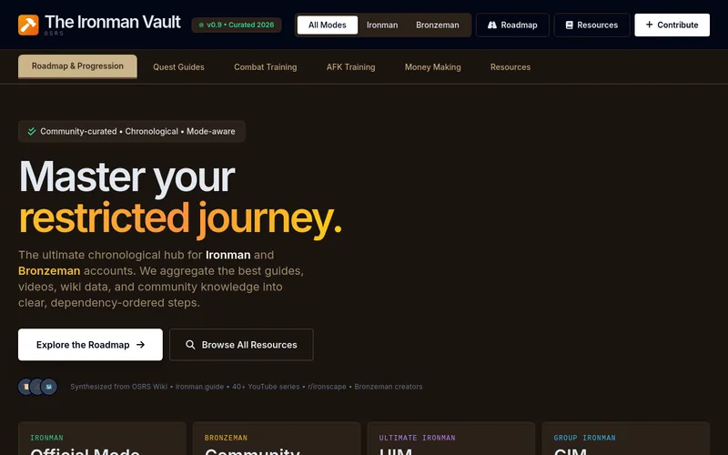

v212Runeforge
Learn GDScript (Godot 4) by writing real code: your scripts explore procedural dungeon floors, find spell tomes, fight foes and make camp. Training lessons, Drills, the Arena and Hero stats all feed the Journey.
Games and tools I build with AI.
Each game is one self-contained HTML file. Saves stay in your browser (localStorage), so clearing site data wipes them and they don't sync between devices.

v212Learn GDScript (Godot 4) by writing real code: your scripts explore procedural dungeon floors, find spell tomes, fight foes and make camp. Training lessons, Drills, the Arena and Hero stats all feed the Journey.

v304Washed ashore near Oakvale and soaked, you drink from the well (not the sea), twist cord, lash a flint hatchet and keep a fire through the night. Fill the villagers' daily board orders, craft at stations and the forge, and train skills like woodcutting and smithing.

Wake on the cobbles of a walled town with the gate shut. Keep hunger and thirst in check, swing a hatchet, trade at the stalls and take work from the board until a haul mark opens the gate, while a ruin stair waits in the south-west.
Live websites I've built with AI. These open the real sites.

A radar for U.S. federal awards and contracts: which public companies won what, with deal, status, sourced dollars and the official source. New awards also come as an RSS feed you can follow.
thefedforge.com
An evidence companion for sound healing: study cards on music, singing bowls and related practices, with honest evidence labels. Made for my wife's business.
sound-evidence-hub.netlify.app
A chronological, mode-aware progression hub for Old School RuneScape Ironman and Bronzeman accounts, gathering guides, videos and wiki data into ordered steps.
precious-dodol-374cd6.netlify.app